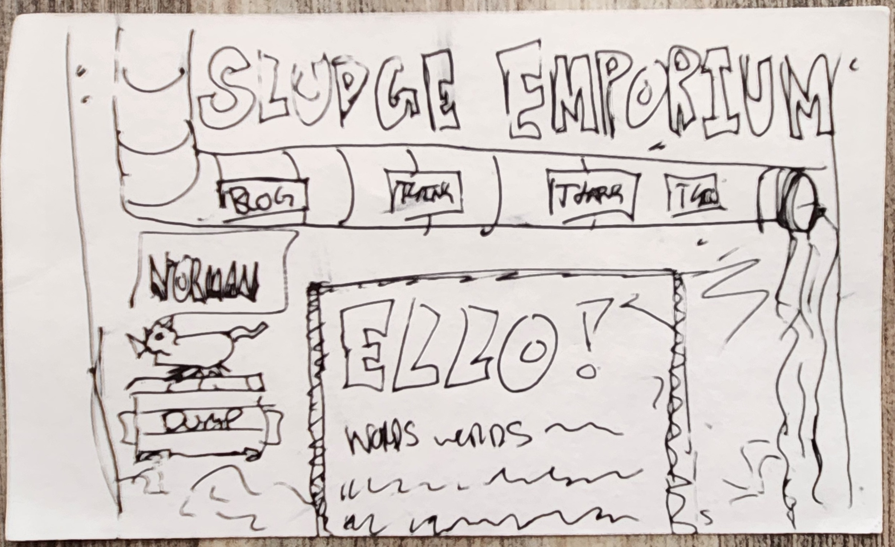
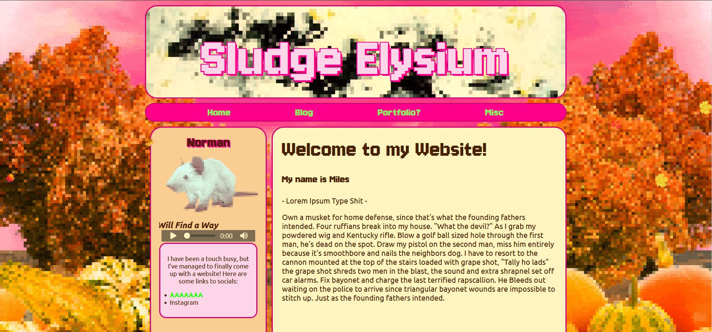

Making the Website
A brief look at some semblance of process
After years of wanting to make a website, I finally decided to fully commit to not just going through the motions of HTML and CSS, but actually designing (with a plan) and hosting a website. In fact, here I am writing this blog post for that very website right now! Sludge Emporium is my newest project and I think it would be sort of fun to go through how I went about making it.
Sludge Emporium’s code is an absolute disaster. Unfortunately, because of the way the internet functions, I can’t hide the source code from anyone. My shame lays bare for anyone who bothers to use their browser’s inspect tool. If you’re viewing on mobile, then you likely already see the problem without even needing to read a single line of CSS. Regardless, I am proud if it. I “made” a lot of the art for the site and I did something I don’t think I’ve ever done as an “artist” before: I made a plan and executed it fairly accurately.[1] I drew a bunch of thumbnail sketches on index cards—which are the best note taking tools in the world and the subject of an essay for another day—and then chose my favorite and tried to recreate it.
I think I kinda nailed it. There are some details which, as of writing, I’d like to implement later on: an animated vignette of fog, floating dust particles, a music player that functions (I can’t seem to get it to work outside of the live server). But for now, I am very proud of my work. Especially since my previous attempts to make a visually interesting website were mostly unplanned.

this was the first successful attempt
this was a more serious second attempt
You can see how I sort of iterated on the same ideas—most centrally my rat avatar Norman being a focal piece of the whole thing. The skeleton of the site (which I brutalized within minutes) was provided by [I CAN’T FIND THIS SITE].The rat avatar is really old at this point, but the process I used to make it and all the variants is what I did to make all the art of my site. Basically everything is a digital collage of PNGs that I then pixelate using this lovely website: https://pixelartvillage.com/. I did this for all the art except three bits: the slime waterfall and title, the background wall, and the pipe. The slime waterfall and title I made using good ol’ classic pixel art. The title was easy enough—just slimy bubble letters—but the slime waterfall was a little trickier. I don’t know how it looks the way it does, but miraculously it does convey the idea of a liquid falling. I made a brief three frame animation. All I did was put the highlight colors on a separate layer and drag them down each frame, adding a bit of noise and filling in the gaps in the process. I figured it wasn’t going to work, but was pleasantly surprised when it actually did.
The pipe was comically difficult to make. I wanted a very specific shape and I wanted only the pipe, so my usual visual style of layering PNGs (covering up undesirable shapes with other images) wasn’t going to work. Instead, I went to GIMP and I took a stock image of a pipe and hacked it into the shape I wanted. I had never used GIMP before, so it took forever and I’m still not fully proud of it. I made the pipe thicker, added a bend, fixed the shadows (kinda but not really.. just don’t look to close), and pixelated the whole thing to cover up the dubious details. In the end, it works.
The last bit of art was kindly provided to me by my older brother. The background honestly carries the visuals of the whole site. I’m uncertain if it would even be legible as this sort of gross, dingy sewer system without it. Plus, it gets all the colors I wanted in a single image which I never would be able to achieve with the same smoothness using my PNG collage method.
That is pretty much it! Just a beautiful mess. As of writing, I’ve yet to make the Portfolio or Misc pages since I’m still unsure of what to put on there. I make “art” I can post—stuff like origami and models. I also have math papers I could upload and presentations and more generally things I’m up to. I’ll sort it out later, I suppose.
[^1]The excessive use of scare quotes is primarily to avoid criticism from the actually talented artists in my life. I am a judge penitent—I already know my “art” is questionable, but who are you to think yours is more legitimate?